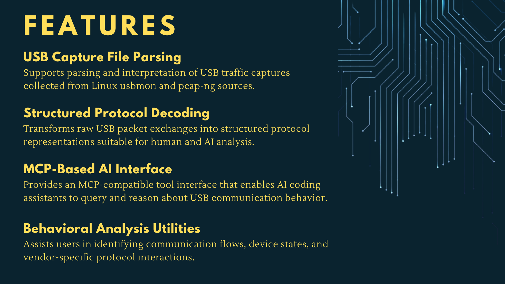

About Me
Hi, I'm Alicia Curths, a computer science undergraduate student based in Portland, Oregon. I have a passion for science, technology, and innovation, and am eager to apply my skills and knowledge to real-world challenges.
Before turning to software, I spent 13 years as a radiologic technologist and mammographer. The career taught me how to work both independently and as part of multidisciplinary care teams, perform quality control on complex equipment, safeguard sensitive information under HIPAA, and think clearly under pressure in high-stakes situations. It also taught me how to communicate technical concepts in plain language; a skill I find just as valuable in code reviews and documentation as it is at the clinic.
I bring that same attention to detail, reliability, and collaborative mindset to my work in computer science. I'm especially drawn to problems where careful engineering meets real human impact, and I'm excited to grow as an engineer who delivers software that's thoughtfully built, inclusive, and dependable.

Experience
Work History
- Delivered diagnostic imaging services, including screening and diagnostic mammograms to a diverse patient population, demonstrating strong technical skills and attention to detail.
- Ensured patient comfort and safety during procedures, adhering to established protocols and guidelines to provide high-quality imaging and patient-centered care.
- Collaborated with multidisciplinary teams to provide patient-centered care, communicating effectively with physicians, radiologists, and other healthcare professionals.
- Performed quality control testing on imaging equipment, adhering to quality control protocols to ensure optimal performance and patient safety.
- Safeguarded sensitive patient information in compliance with HIPAA regulations, demonstrating a strong commitment to confidentiality and ethical standards.
- Delivered routine screening and diagnostic mammography services in outpatient breast care center.
- Assumed lead QA responsibilities, directing process improvements and staff training.
- Performed wide range of x-ray, mammography, bone densitometry, and fluoroscopy exams in high volume outpatient clinic.
- Improved staffing coverage and reduced patient wait times by obtaining secondary certification in mammography.
Technical Skills
- Languages: Python, C, C++, and Java
- Tools & Technologies: Git/GitHub, PostgreSQL, Visual Studio Code, Linux, Bash, Microsoft, Docker, Google Cloud Platform and AWS
- Concepts: Object-Oriented Programming, Data Structures, Algorithms, Software Development Lifecycle, RESTful APIs, and Cloud Computing
- Courses: Machine Learning, Web & Cloud Security, Intro to Web Development, Algorithms & Complexity, System Programming and Architecture, Intro to Operating Systems.
Projects
BSU Tool
Collaborated with a team of undergraduate students to build a Python CLI and MCP server that decodes Linux usbmon pcap-ng captures into structured USB transactions, enabling AI-assisted reverse engineering of vendor-specific USB device protocols.

BSU Tool on GitHubReddit Sentiment Analyzer
Real-time Reddit sentiment analysis pipeline implemented with Python, PostgreSQL, and Docker which ingests subreddit posts via the Reddit API, scores them with VADER sentiment analysis, and visualizes hourly sentiment trends through a simple, but interactive Streamlit dashboard.
Reddit Sentiment on GitHub